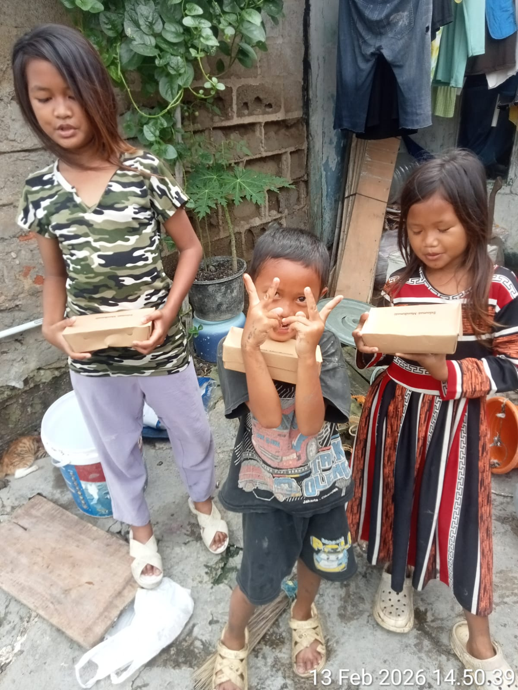

MASJID AL-AMANAH
TARUMA JAYA
TARUMA JAYA
V2QH+MGX, Kp keramat, RT.003 RW006,
Samudra Jaya, Kec. Tarumajaya, Bekasi Utara, Jawa Barat
Ahlan wa Sahlan, kami mengucapkan jazakumullahu khairan katsiran kepada seluruh jamaah atas kedermawanannya. Melalui halaman ini, kami menyajikan laporan pemanfaatan dana sebagai bentuk transparansi dalam mengelola amanah Anda. Donasi yang terkumpul disalurkan secara berkala untuk santunan rutin anak yatim piatu, bantuan pangan dhuafa, serta perlindungan bagi fakir miskin di lingkungan sekitar masjid, di samping untuk menjaga keberlangsungan operasional dan kegiatan dakwah Masjid Al-Amanah. Semoga setiap rupiah yang disedekahkan menjadi pahala jariyah dan pembuka pintu rezeki bagi kita semua.transparan untuk menunjang operasional masjid serta program sosial kemaslahatan umat.


Sebagai bentuk pertanggungjawaban amanah, pengurus Masjid Al-Amanah menyusun laporan komprehensif terkait penyaluran donasi bagi anak yatim piatu dan fakir miskin. Program ini mencakup pemenuhan kebutuhan pokok dan santunan pendidikan guna meringankan beban saudara kita. Seluruh data dikelola secara transparan demi menjaga kepercayaan jamaah dan para muhsinin.
Laporan foto dan video dokumentasi sedang dalam tahap pengeditan oleh tim media masjid dan akan dipublikasikan segera setelah penyaluran rampung.

Dokumentasi koordinasi tim panitia PT PAMA bersama Yayasan Cahaya Sunnah Ummah di Masjid Al-Amanah. Kegiatan ini merupakan bentuk kolaborasi strategis dalam rangka persiapan penyaluran santunan bagi anak yatim dan dhuafa di lingkungan Tarumajaya. Sinergi ini bertujuan mempererat ukhuwah serta memastikan bantuan tersampaikan dengan tepat sasaran.
LIHAT DOKUMENTASI KEGIATANUpdate Foto & Video: Penyaluran 5 Maret 2026

Alhamdulillah, telah diterima sedekah beras sebanyak 10 karung (Total 500kg) dari Bapak H. Muin selaku owner CV Berdikari Mitra Abadi. Bantuan logistik ini dialokasikan untuk santunan dhuafa dan kebutuhan berkah Ramadhan di Masjid Al-Amanah. Semoga Allah SWT memberikan keberkahan rezeki, kesehatan, serta kelancaran usaha bagi Bapak sekeluarga. Aamiin.
LIHAT DOKUMENTASIUpdate Foto: Penyaluran 5 Maret 2026

Laporan penggunaan dana operasional untuk pemeliharaan fasilitas utama Masjid Al-Amanah. Mencakup biaya utilitas (listrik/air), pemeliharaan kebersihan gedung, hingga perawatan sistem tata suara guna mendukung kekhusyukan jamaah dalam beribadah. Kami berkomitmen untuk menyediakan rumah ibadah yang nyaman dan bersih bagi umat.
LIHAT FOTO DOKUMENTASI
Halaman ini menyajikan dokumentasi foto autentik dari kegiatan penyaluran paket sembako dan santunan tunai bagi anak yatim serta keluarga tidak mampu. Setiap foto merupakan bukti nyata bahwa amanah sedekah Anda telah tersampaikan langsung kepada mereka yang berhak menerima. Komitmen kami adalah menjaga transparansi melalui bukti visual yang dapat dipertanggungjawabkan.
Update Foto: Penyaluran Maret 2026

Kumpulan dokumentasi visual penyaluran bantuan pakaian layak, perlengkapan sekolah, dan pendistribusian Mushaf Al-Qur'an. Laporan ini merupakan bukti fisik nyata dari aliran sedekah Anda yang telah sampai ke tangan penerima manfaat di berbagai pelosok. Transparansi adalah prioritas utama kami dalam menjaga amanah setiap donatur.
Update Video: Penyaluran Maret 2026
Bagi Antum yang memiliki kelapangan rezeki dan keinginan untuk turut serta dalam mendukung kemakmuran Masjid Al-Amanah, kami membuka pintu kebaikan melalui donasi operasional.
*Partisipasi ini bersifat sukarela (tidak wajib) dan disesuaikan dengan keikhlasan serta kemampuan masing-masing jamaah.
V2QH+MGX, Kp keramat, RT.003 RW006,
Samudra Jaya, Kec. Tarumajaya, Bekasi Utara, Jawa Barat